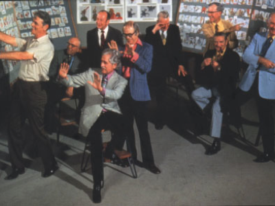

Legacy
Disney History, as it stands
History is replete with examples of self-made histories, and the myriad histories devoted to the Disney studio are a testament to that. The legacy of the famed “Nine Old Men,” a group of core animators during the early days of the Walt Disney Studio, has been laid down in many publications, interviews and animation lore since Walt dubbed them with the famous moniker around 1950. Ollie Johnston and Frank Thomas were probably the two most famous of the Nine for several reasons, not the least of which was self-promotion. In 1981, Johnston and Thomas wrote The Illusion of Life, which brought them into the public sphere and branded them as the perennial experts on the studio’s various personalities and overall history. What is less well known is that reclusive animator Les Clark, one of the Nine, was originally asked by Walt to write the book.
Clark had been the studio’s longest employee, from 1927 to 1975, and so was a natural choice to pen the treatise on its history. Other reasons may have been that he was a reclusive observer who consistently avoided the limelight, and he was favored by Walt because of his agreeable and relaxed personality. Animator Art Babbitt, a former coworker of Clark’s on such films as Country Cousin (1936), told Stephen Worth in an interview that Clark was referred to as “Walt’s Boy” by the other animators. Whether this nickname was spiteful or purely fraternal is unclear, but it still begs the question of what The Illusion of Life would have looked like if Walt’s Boy had written it?
Renowned animation historian Mike Barrier is among several writers who have presented a somewhat revisionist argument against the popular notion that the animation of the Nine does not represent the studio’s best output. These writers stipulate that the wave of animators that came in from New York in the 1930’s, among them Ham Luske, Norm Ferguson, Fred Moore, Art Babbitt, and Bill Tytla, deserve equal credit. According to Barrier, the designation of the Nine was simply an outcome of the fact that they were the only animators left working at the studio; “in the forties, fifties, and sixties, most of those earlier animators were working elsewhere, if they were still alive. It was the nine who were working for Disney.”
There is no doubt Disney has some level of culpability is shaping the myth of the Nine, simply by assigning their moniker, with its overtones of supremacy and power. But of these Nine, certainly Clark deserves a moment of special credit simply due to the fact that he was present at the studio several years before the New York crew came, and many years after they dispersed. This kind of longevity breeds an animation career that most clearly represents the progression and refinement of animation styles over the years, regardless of its individual flourishes or superiority.
The goal of this site is not to create a revisionist history about Clark’s work as superior to other animators within or outside the Nine. It is to present the sequence of animation milestones in Clark’s career as an exemplary representation of the work of a studio with a very “set-in-stone” image in place.
The Project
My research into Clark’s contributions was at times fruitless as well as frustrating, for the very reasons I’ve listed above. Clark continuously resisted stepping into the limelight and did not call attention to himself, so writers were prone to skipping over him in the popular histories about the studio. Because of this, my research took a somewhat back-way approach. I began by examining some of the most iconic books about Disney history. I had read a few of them in part or in whole, so I had a basic idea of the major developments. For this reason, I began by looking for references to Clark via the books’ indexes. This proved somewhat frustrating, as the mentions were brief and mostly connected with broader listings of the Nine.
At some point, I got a hold of three large folders of material on Clark from the John Canemaker Animation collection at NYU. These contained loads of biographical data, correspondence, and many transcripts of interviews with Clark and his family. What I found interesting is the number of times I found evidence that Clark was associated with some of the major developments in the studio’s history. For example - looking through some of the correspondence, Clark is cited numerous times in interviews as being part of the group that provided the homegrown soundtrack for Steamboat Willie.
Examining these, I began to wonder why Clark not included in the stories about this recording session espoused by some of the popular studio histories:
“As soon as animation on Steamboat Willie was completed, Walt and his colleagues made their first attempt at improving a soundtrack. One July evening they set up the projector outside the studio window (to minimize noise from the machine, and Roy projected Steamboat Willie onto a bed sheet while Walt, Ub, Wilfred Jackson and Johnny Cannon provided music, voices and sound effects. ‘It was terrible,’ Walt later recalled, ‘but it was wonderful! And it was something new!’” [Richard Holliss and Brian Sibley, The Disney Studio Story
(New York: Crow, 1988): 16]
This same section goes on to laud Ub Iwerks for his contributions to the studio and the earliest Mickey, without mentioning the fact that Clark was his assistant during this time. In fact, it states that the New York group was brought in to help Iwerks, stressing specifically that he was attempting much of his early work alone: “even thought Ub Iwerks was a prolific draughtsman, he couldn’t hope to meet the demand for new pictures single-handed. [Walt] therefore began recruiting among the established animators and cartoonists of New York, many of whom showed interest in joining Disney.” [The Disney Studio Story: 18]
There has been a renewed interest on the web lately in dissecting archival artifacts like exposure sheets and animation drafts that have trickled out into the public sphere (and out of the tight grasp of the Disney Archives). The result of this is a new look at exactly what animators were responsible for what iconic pieces of animation. Sometimes, like the infamous game/metaphor Telephone, stories that pinpoint animators’ work on particular films get passed down and somewhat distorted in the process. Most of these stories seems to favor members of the Nine Old Men like Thomas, Kimball, and Johnston.
Mike Barrier, in a critique of John Canemaker’s book Walt Disney’s Nine Old Men and the Art of Animation, says that Clark’s section in the book is padded and masks the fact that he was an inferior animator; “Because Canemaker writes about the Nine as if they were of roughly equal importance, and thus writes about them at roughly equal length, some of his chapters feel padded. This is especially true of the chapters devoted to Les Clark and John Lounsbery, whose work was regarded, correctly, by their fellow "old men" as being on a somewhat lower plane than that of the other seven.”
Was it?
In his interview with Stephen Worth, Art Babbitt said (somewhat reluctantly) that Clark’s animation on Country Cousin (1936) was just as good as his own. Michael Mayerson, in reviewing one of the animation drafts that are coming out every day on Hans Perks blog and elsewhere, has said (this time about the 1951 short Plutopia) “I've yet to see anything Les Clark animated that doesn't impress me. Clark gets the initial part of the dream sequence, where the characters' relationships are nailed down. […] This is all personality animation and Clark does a great job of putting the emotions across and establishing the dream's version of the cat.” As more of these drafts come out, a new history about Clark is emerging. Not only does his work shine in smaller shorts like Plutopia, but it helped define some of the most iconic moments in many of the features. Among many, many other things, Clark animated:
•Some of the best Mickey scenes in The Band Concert (1935), where Mickey swats flies as his sleeves fall down, and does a little Egyptian dance when ice cream slides down his back
•Almost all appearances of the character of Clara Cluck, one of Clark’s specialty characters
•Many scenes of the dwarves in Snow White, including most of the shots of Snow White dancing with the dwarves in the Silly Song sequence, and much of Dopey’ animation throughout the film
•Mickey’s opening scene in The Brave Little Tailor
•A hefty chunk of animation on the character of Pinocchio, including (among others) the scene when he first leaves for school, underwater shots of him looking for Geppetto, and the reunion and escape scenes inside Monstro
•Much of the Mickey animation in “The Sorcerer’s Apprentice” segment of Fantasia, including the scene when Mickey wakes up the broom, and when he skips down the stairs
•The Sugarplum Fairies in “The Nutcracker Suite” segment of Fantasia, the movement for whom Clark invented
•Much of the animation of Cinderella’s character, including (among other scenes) her first defiance of the Stepmother, the montage during “So This is Love,” the film’s climax where she escapes the tower and brings out the second glass slipper, and the wedding finale
•Much of the animation for Tinkerbell in Peter Pan, a character frequently attributed solely to Marc Davis
•The “Zip-a-dee-doo-dah” sequence in Song of the South (1946)
Clearly Clark’s work can not be dismissively written off as sub-par. The real problem appears to be that these drafts are just now coming to light, so popular notions about character and sequence attributions are getting revised. It is becoming clear that outspoken self-promoters like Thomas and Johnston have only dominated the publicity for the Nine because of this very outspokenness. Later in the blog about Plutopia quoted earlier, Mayerson said: “I'd have to know more about Clark's feature work, but I wonder if he might not have had more freedom on the shorts. It doesn't seem that he was often the lead on a feature character, so he was forced to make his work fit in with other people's ... On the shorts, Clark's characters exude confidence and liveliness. Were those qualities present in his feature work?” If Clark was reluctant to “get the word out” about his contributions, it is now time for someone to try and do that for him.

Sunday, June 10, 2007
